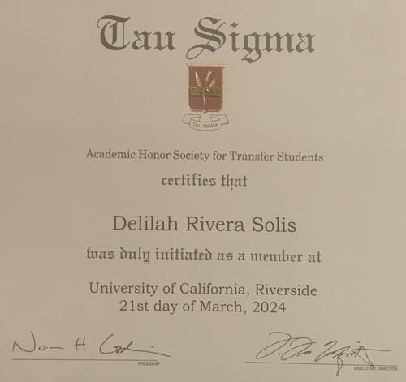

Delilah Rivera Solis
I am a curious soul with a deep-rooted passion for
uncovering and preserving the narratives that shape our collective history.
My journey into the world of archival research and public history has been
nothing short of enlightening, fueled by a relentless pursuit of knowledge
and a genuine desire to contribute meaningfully to the preservation of our
cultural heritage.
With a diligent approach and an unwavering commitment to excellence, I have
ventured into various realms of professional experience that have sculpted
my understanding of the intricate tapestry of historical preservation.
From my role as a Public History Intern at A People’s History of the IE,
I delved into the meticulous process of transcribing oral histories and
creating metadata for digitized images, all while immersing myself in the
rich narratives of the Inland Empire. This experience not only honed my
archival skills but also instilled in me a profound appreciation for the
power of storytelling in shaping our understanding of the past. Similarly,
my tenure at the City of Corona Public Library offered me invaluable hands
-on experience in archival management, where I learned the importance of
adhering to archival description standards and creating comprehensive catalogs
to facilitate collection discovery. Through these experiences, I developed
a keen eye for detail and a deep understanding of the ethical responsibilities
inherent in preserving historical materials for future generations.
Beyond the realm of archival work, my role as a House Manager at Starlight
Cinemas has provided me with a unique blend of customer service expertise
and operational management skills. From overseeing guest payments to managing
clerical tasks, I have cultivated a versatile skill set that complements
my passion for historical preservation. My ability to navigate digital
tools and software with ease has allowed me to streamline processes and
enhance the overall guest experience, underscoring my commitment to excellence
in every endeavor.
In addition to my professional experiences, my academic journey has served
as a cornerstone of my growth and development. Currently pursuing a Bachelor
of Arts in History at the University of California, Riverside, I have
consistently excelled academically, earning a place on the Dean’s List
and maintaining a GPA of 3.90. My time at Palomar College further solidified
my passion for history, earning an Associates of Arts degree while also being
recognized on the Dean’s List for my academic achievements.Furthermore, my
time spent at both University of California, Riverside and Palomar College
has not only enriched my academic knowledge but has also fostered a sense of
intellectual curiosity and a dedication to lifelong learning. Engaging in
stimulating discussions with peers and professors, I have broadened my
perspectives and deepened my understanding of historical narratives across
diverse cultures and time periods. These academic experiences have not only e
quipped me with a robust foundation in historical research methodologies but
have also instilled in me a sense of responsibility to contribute meaningfully
to the scholarly discourse in the field of history.
As I look towards the future, I am excited about the possibilities that
lie ahead in the dynamic and ever-evolving landscape of archival research
and public history. With a blend of academic excellence, practical experience,
and a genuine passion for preserving our cultural heritage, I am confident
in my ability to make meaningful contributions to the field and leave a
lasting impact on future generations.
Experience
Public History Intern
• Transcription, description, and creation of metadata for oral
histories.
• Creating metadata for digitized images.
• Creating records for digesting in the Omeka archival content
management system.
• Geolocating information from oral histories and other materials
using ArcGIS.
• Creating short descriptive texts for a digital timeline.
• Identifying AV clips and images for timeline and StoryMaps.
• Other tasks related to digital work on A People’s History.
Special Collections & Archives Intern
• Packing and unpacking items.
• Processing and digitizing items and collections.
• Archival description standards and processing.
• Creating catalogs of processed and unprocessed collections.
• Bibliographic and metadata description for development, security, and discovery
House Manager
• Responsible for processing orders and approving quotes, ensuring
accuracy and timeliness.
• Manage guest payments and refunds while addressing associated
inquiries and issues professionally and efficiently.
• Oversee the smooth operation of clerical tasks, including managing
computer systems, printers, and phone communications to support daily operations.
• Supervise Guest Services and Zoho chat support to deliver exceptional
customer service and prompt resolution of inquiries.
• Execute diverse administrative responsibilities, including file
management, conducting interviews, facilitating hiring processes,
scheduling, and managing payroll with meticulous attention to detail.
• Address customer inquiries promptly and effectively, resolving
complaints to maintain customer satisfaction and uphold the company's
reputation.
• Proficiently utilize Microsoft Office suite to perform various
administrative tasks, including data entry, document preparation, and report generation.
• Maintain meticulous daily transaction records and generate
comprehensive reports to track business performance and support
informed decision-making processes.
Education
UC Riverside
Palomar College
Portfolio
